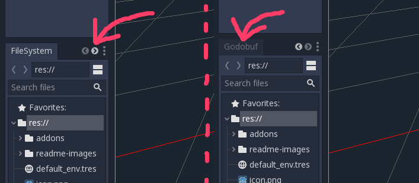
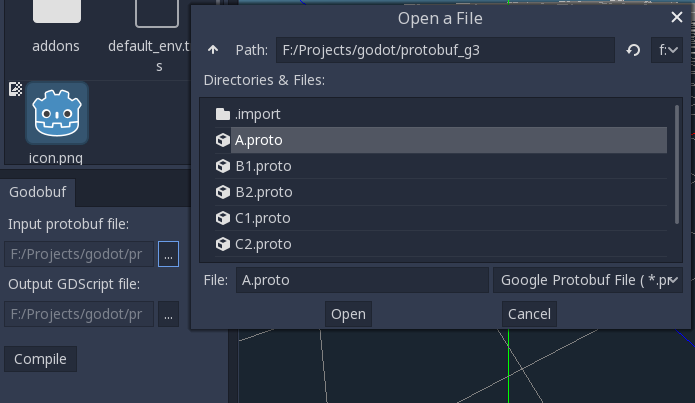
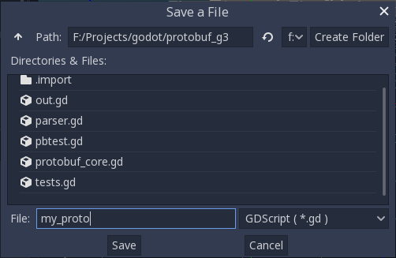
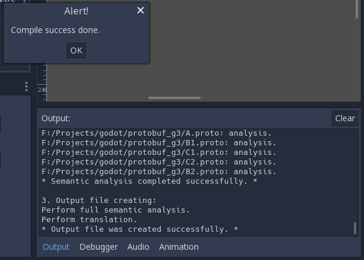

About
Godobuf is a Google Protocol buffers compiler from .proto-file description to GDScript output file.
Output file contains user protobuf messages represented by classes and protobuf core code which responsible for data serialization/deserialization.
Godobuf used as plugin for Godot v3.2
Godobuf is easy to use, does not require rebuilding the Godot, because it is written in GDScript. All you need is to start the plugin.
Features
Supported
Protobuf v2 and v3
Message definitions (cascade messages)
Simple Protobuf types (int32, uint32, sint32, fixed32, sfixed32
int64, uint64, sint64, fixed64, sfixed64, float, double, bool, enum, string, bytes)Oneof type
Map type
Repeated fields
Option
packedfor fieldsProtobuf imports (also public modificator)
Debug string for class (message) fields (since v0.2.1)
Not supported
Packages
Reserved statements
Services
Any types
Default values option for fields
Note
Please note that the Godobuf panel may not be visible, because located on the last tab.

Usage
From the User Interface
Open file dialog window
Input protobuf file.Choose *.proto file in a dialog window.
Open file dialog window
Output GDScript file.Choose directory and enter output file name.
Press
Compilebutton.See Godot
Outputfor details.All possilble errors details are displayed in Godot
OutputAfter task completion you’ll see alert window which report you about compilation result.
If compilation was successful a new GDScript will be created in a specified directory.
Use script in you project.
From the Command Line
From the root folder of your project, run
godot -s addons/protobuf/protobuf_cmdln.gd --input=A.proto --output=my_proto.gdOptionally, define an alias:
alias godobuf='godot -s addons/protobuf/protobuf_cmdln.gd'
Unit tests
This option is mainly for those who modify the code or want to check the stability of the version.
Press
Run unit tests (proto 2)orRun unit tests (proto 3)button to start the tests.See Godot
Outputfor details.All possilble errors details are displayed in Godot
OutputAfter task completion you’ll see alert window which report you about tests result.
Mapping of protocol buffers datatypes to GDScript
Protobuf |
GDScript |
GDScript typeof |
|---|---|---|
int32, uint32, sint32, fixed32, sfixed32 |
int |
TYPE_INT |
float |
double / real |
TYPE_REAL |
double |
double / real |
TYPE_REAL |
bool |
bool |
TYPE_BOOL |
enum |
enum / int |
TYPE_INT |
string |
String |
TYPE_STRING |
bytes |
PoolByteArray |
TYPE_RAW_ARRAY |
oneof |
fields described in oneof |
different |
map |
Dictionary |
TYPE_DICTIONARY |
message |
class |
TYPE_OBJECT |
repeated fields |
Array |
TYPE_ARRAY |
Default values
Protobuf version 2
Initially all fields setted as null.
Default values in .proto syntax not supported.
Repeated fields are setted as empty Array.
Protobuf version 3
Initially all fields setted to default values specified in Protobuf manual.
Repeated fields are setted as empty Array.
Keywords
Keywords cannot be used in any other constructions for which they are not intended. In particular, keywords cannot be used as field names and message names.
Keywords:
message, double, float, int32, int64, uint32, uint64, sint32, sint64, fixed32, fixed64, sfixed32, sfixed64, bool, string, bytes, enum, map, oneof, true, false, syntax, import, package, option, service, reserved, weak, public, repeated, required, optional, allow_alias, custom_option, extensions, packed
Using generated .gd file in Godot project
Open the script in which Protobuf will be used.
Preload previously generated script:
const MyProto = preload("res://my_proto.gd")
Use previously described messages as GDScript classes. Example, we have .proto file:
syntax = "proto3";
message A {
double f1 = 1;
B f2 = 2;
}
Pack (serialization) message
Packed message must be instanced as GDScript class object directly.
Pack message A:
# Create packed class (message)
var a = MyProto.A.new()
# Example, set field f1
a.set_f1(12.554)
# Pack message A
# Use to_bytes() method, it's return PoolByteArray
var packed_bytes = a.to_bytes()
Unpack (deserialization) message
Unpacked message must be instanced as GDScript class object directly.
Re-calling from_bytes() of the same object instance is not allowed. You must create new object instance.
Unpack message A:
# Create unpacked class (message)
var a = MyProto.A.new()
# Unpack byte sequence to class (message) A.
# Use from_bytes(PoolByteArray my_byte_sequence) method
var result_code = a.from_bytes(my_byte_sequence)
# result_code must be checked (see Unpack result codes section)
if result_code == MyProto.PB_ERR.NO_ERRORS:
print("OK")
else:
return
# Use class 'a' fields. Example, get field f1
var f1 = a.get_f1()
Unpack result codes
from_bytes() method returns a success or an error state.
User must check the result code to make sure the unpacking is correct (see ‘Unpack message’ section above).
Result codes (enum PB_ERR) are presented in table below.
Unpack result code |
int representation |
Description |
|---|---|---|
NO_ERRORS |
0 |
Success |
VARINT_NOT_FOUND |
-1 |
Parse error. |
REPEATED_COUNT_NOT_FOUND |
-2 |
Parse error. |
REPEATED_COUNT_MISMATCH |
-3 |
Parse error. |
LENGTHDEL_SIZE_NOT_FOUND |
-4 |
Parse error. |
LENGTHDEL_SIZE_MISMATCH |
-5 |
Parse error. |
PACKAGE_SIZE_MISMATCH |
-6 |
Parse error. |
UNDEFINED_STATE |
-7 |
Error. |
PARSE_INCOMPLETE |
-8 |
Byte sequence error. |
REQUIRED_FIELDS |
-9 |
Sender error. |
API
1. Scalar types
Scalar types: int32, uint32, sint32, fixed32, sfixed32, int64, uint64, sint64, fixed64, sfixed64, float, double, bool.
Set value
Use method set_<field_name>(value). Sets field value.
Get value
Use method get_<field_name>(). Returns field value.
Example
.proto-file
syntax = "proto3";
message A {
double f1 = 1;
int32 f2 = 2;
}
GDScript. Using set
var a = MyProto.A.new()
a.set_f1(12.554)
a.set_f2(500)
GDScript. Using get
var a = MyProto.A.new()
var state = a.from_bytes(byte_sequence)
# First you have to check the 'state' ...
var my_field_f1 = a.get_f1()
var my_field_f2 = a.get_f2()
2. String
Use similarly to scalar types.
Set value
Use method set_<field_name>(value). Sets field value.
Get value
Use method get_<field_name>(). Returns field value.
Example
.proto-file
syntax = "proto3";
message A {
string f1 = 1;
}
GDScript. Using set
var a = MyProto.A.new()
a.set_f1("my string")
GDScript. Using get
var a = MyProto.A.new()
var state = a.from_bytes(byte_sequence)
# First you have to check the 'state' ...
var my_field_f1 = a.get_f1()
3. Bytes
Use similarly to scalar types.
Set value
Use method set_<field_name>(value). Sets field value.
Get value
Use method get_<field_name>(). Returns field value as PoolByteArray.
Example
.proto-file
syntax = "proto3";
message A {
bytes f1 = 1;
bytes f2 = 2;
}
GDScript. Using set
var a = MyProto.A.new()
# Correct both
a.set_f1([1,2,3,4,5])
a.set_f2(PoolByteArray([0,3,4,5,7]))
GDScript. Using get
var a = MyProto.A.new()
var state = a.from_bytes(byte_sequence)
# First you have to check the 'state' ...
var my_pool_byte_array_f1 = a.get_f1()
4. Enum
Use similarly to scalar types, but values should be taken from Enum which was generated by compiler.
Generated Enums are named according to the following rule:
<message root>.<message inner>. ... <enum name>
Using enum name in GDScript:
<preloaded/loaded resource instance name>.<class root>.<class inner>. ... <enum name>
Set value
Use method set_<field_name>(value). Sets field value.
Get value
Use method get_<field_name>(). Returns field value.
Example
.proto-file
syntax = "proto3";
enum TestEnum {
VALUE_0 = 0;
VALUE_1 = 1;
VALUE_2 = 2;
}
message B {
enum BEnum {
BVALUE_0 = 0;
BVALUE_1 = 1;
BVALUE_2 = 2;
}
}
message A {
TestEnum f1 = 1;
B.BEnum f2 = 2;
}
GDScript. Using set
var a = MyProto.A.new()
a.set_f1(MyProto.TestEnum.VALUE_1)
a.set_f2(MyProto.B.BEnum.BVALUE_2)
GDScript. Using get
var a = MyProto.A.new()
var state = a.from_bytes(byte_sequence)
# First you have to check the 'state' ...
var my_field_f1 = a.get_f1()
if my_field_f1 == MyProto.TestEnum.VALUE_1:
print("OK value-1")
5. Oneof
Use similarly to scalar types, but you can set the value for only one field grouped in oneof.
Oneof group name not used in GDScript.
If you set one field of oneof group another fields will be cleared automatically.
Set value
Use method set_<field_name>(value). Sets field value.
Get value
Use method get_<field_name>(). Returns field value.
Has value
Use method has_<field_name>(). Returns true if value is been setted in byte_sequence.
Example
.proto-file
syntax = "proto3";
message A {
oneof my_oneof {
string f1 = 1;
int32 f2 = 2;
map<int32, int32> f3 = 3;
}
}
GDScript. Using set
var a = MyProto.A.new()
a.set_f1("my string")
# if you set f2: f1 and f3 will be setted to default values (or null for Protobuf v2)
a.set_f2(10)
GDScript. Using get
var a = MyProto.A.new()
var state = a.from_bytes(byte_sequence)
# First you have to check the 'state' ...
var my_field_f1 = a.get_f1()
GDScript. Using has
var a = MyProto.A.new()
var state = a.from_bytes(byte_sequence)
# First you have to check the 'state' ...
if a.has_f1():
print("F1")
elif a.has_f2():
print("F2")
6. Map
Add value
For non-message map values used method:
add_<field_name>(key, value). Append one key-value pair to Dictionary (map) field.
If map value is message (class) used method:
add_<field_name>(key). Append one key-value pair to Dictionary (map) field and return value object instance.
Get value
Use method get_<field_name>(). Returns GDScript Dictionary (map).
Example
.proto-file
syntax = "proto3";
message A {
message B {
int32 f1 = 1;
int32 f2 = 2;
}
map<int32, string> f1 = 1;
map<int32, B> f2 = 2;
}
GDScript. Using add
var a = MyProto.A.new()
a.add_f1(1, "one")
a.add_f1(2, "two")
a.add_f1(4, "four")
var b
b = a.add_f2(10)
b.set_f1(100)
b.set_f2(200)
b = a.add_f2(20)
b.set_f1(1000)
b.set_f2(2000)
GDScript. Using get
var a = MyProto.A.new()
var state = a.from_bytes(byte_sequence)
# First you have to check the 'state' ...
var my_dict_f1 = a.get_f1()
7. Message
Set value
Use method new_<field_name>(). Create object instance, sets as field value and returns instance.
Get value
Use method get_<field_name>(). Returns object instance.
Example
.proto-file
syntax = "proto3";
message A {
message B {
int64 Bf1 = 1;
float Bf2 = 2;
}
message C {
string Cf1 = 1;
B Cf2 = 2;
}
int32 Af1 = 1;
C Af2 = 2;
}
GDScript. Using new (set)
var a = MyProto.A.new()
a.set_Af1(10)
var c = a.new_Af2()
c.set_Cf1("my string")
var b = c.new_Cf2()
b.set_Bf1(20)
b.set_Bf2(2.5)
GDScript. Using get
var a = MyProto.A.new()
var state = a.from_bytes(byte_sequence)
# First you have to check the 'state' ...
var my_class_instance_c = a.get_Af2()
var my_int32 = my_class_instance_c.get_Af1()
# ...
8. Repeated
Add value for non-message types
Use method add_<field_name>(value). Append value to Array.
Add value for message fields
Use method add_<field_name>(). Create object instance, sets as next Array element and returns instance.
Get value
Use method get_<field_name>(). Returns Array of fields.
Example
.proto-file
syntax = "proto3";
message A {
message B {
int64 Bf1 = 1;
float Bf2 = 2;
}
repeated int32 Af1 = 1;
repeated B Af2 = 2;
}
GDScript. Using add
var a = MyProto.A.new()
a.add_Af1(10)
a.add_Af1(20)
a.add_Af1(30)
var b
b = a.add_Af2()
b.set_Bf1(100)
b.set_Bf2(1.5)
b = a.add_Af2()
b.set_Bf1(200)
b.set_Bf2(2.5)
GDScript. Using get
var a = MyProto.A.new()
var state = a.from_bytes(byte_sequence)
# First you have to check the 'state' ...
var my_array_b = a.get_Af2()
for inst in my_array_b:
print(inst.get_Bf1())
9. Debug method to_string()
All message classes have to_string() method.
to_sting() generate debug string, which contains field names and their values. Default values are ignored.
String output format:
field_<type> - field name
field_int: 12;
field_float: 12.34;
field_bool: True;
field_string: "test";
field_enum: ENUM::2;
field_message_1: {
field_message_2: {
field_int: 12;
field_float: 12.34;
}
field_bool: True;
field_string: "test";
};
field_repeated: [
0: {
field_int: 123;
field_bool: True;
},
1: {
field_int: 454;
field_bool: False;
}
];
field_repeated: [
1: 2,
2: 3,
3: 4
];
field_map: (
"key1": "value1",
"key2": "value2"
);
field_map: (
"object1": {
field_int: 123;
field_bool: True;
},
"object2": {
field_int: 454;
field_bool: False;
}
);
field_bytes: <1, 2, 4, 5>;
field_empty_message: {};
Example
# Debug print, where "message" - any Protobuf class (message)
print(message.to_string())